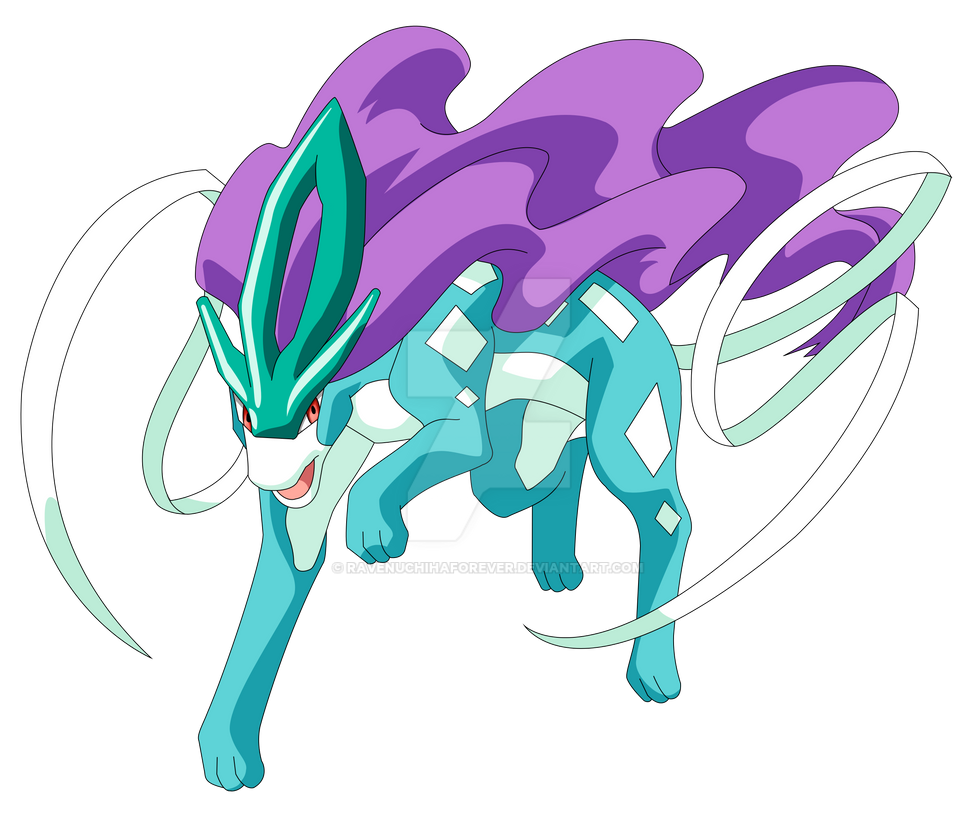

Raikou (Japonês: ラ イ コ ウRaikou) é um Pokémon Legendário de tipo Elétrico introduzido na Geração II. Não é conhecido para evoluir para ou de qualquer outro Pokémon. Junto com Entei e Suicune, é um dos animais lendários ressuscitados por Ho-Oh após a queima da Torre de Bronze.

Entei emana o fulgor do magma. Dizem que este pokémon nasceu durante a erupção de um vulcão. Expele uma explosão massiva de fogo que consome completamente tudo o que toca. Entei é um dos cães lendário da região de Johto, seu número na pokédex: 244. Entei fez um enorme sucesso no filme, O Feitiço dos Unown no filme Entei tem uma enorme participação, o pokémon fez o papel de pai no filme cuidando de uma garota, para aqueles que ainda não assistiram recomendo. Assim como muitos pokémon Entei também tem suas teorias, é uma delas e a teoria de Entei ser uma das possíveis evoluções da Eevee, porém esta teoria ficará para um blog futuro. Entei é um dos mais favoritos lendários da região. Em Pokémon GO estreou em reides de 5 estrelas, como todos os lendários em questão a PvP ele é relativamente pouco usado, porém tem uma forte representação, Entei tem uma resistência mínima e ataques não muito rápidos, digamos que ele ainda Não é capaz de favorecer muito no PvP, mas mesmo assim amamos o pokémon né.
Ele representa o Vento do Norte, e onde quer que ele esteja o vento soprará do norte e é capaz de aprender e usar praticamente todos os ataques com relação ao vento (como Blizzard, e até mesmo Tailwind). Suicune, como os outros animais lendários, é extremamente rápido. Também executa poder limitado mental.
